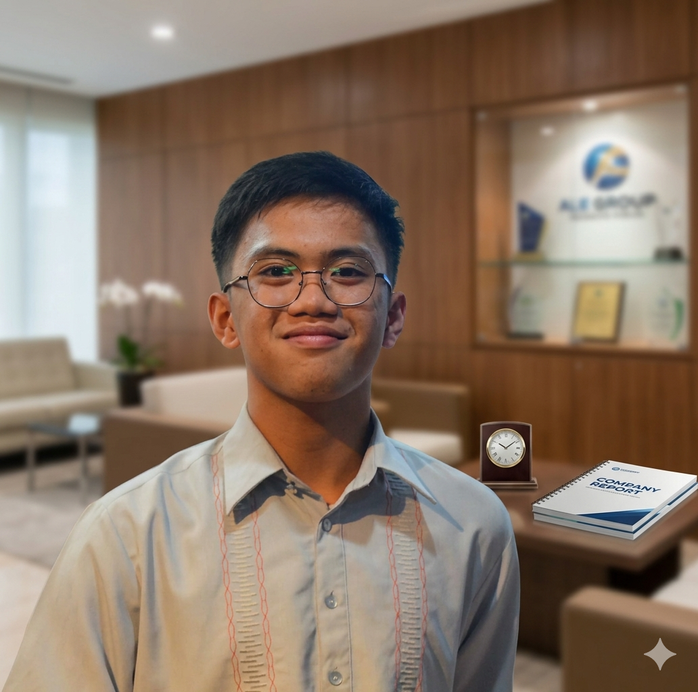

Lian Mark Ola
Professional Virtual Assistant
Delivering fast, reliable support for email management, scheduling, research, and client communications so you can focus on business growth.

About Me
Experienced Virtual Assistant skilled in email and calendar management, data entry, customer communication, research, and administrative support.
Focused on helping businesses stay organized, save time, and improve productivity through reliable remote assistance.
VA Services
Email Management
Organize your inbox, prioritize messages, and prepare professional email responses.
Calendar Management
Schedule meetings, manage appointments, and keep your day running smoothly.
Data Entry
Enter and organize information accurately across spreadsheets, CRMs, and databases.
Market Research
Gather business insights, compare options, and summarize findings for fast decisions.
Customer Support
Respond to client requests and maintain high-quality communication with your audience.
Social Media Assistance
Help with scheduling posts, monitoring engagement, and supporting your online presence.
Experience
Virtual Assistant | Freelance
- Managed client email inboxes, prioritized follow-ups, and prepared responses.
- Organized calendars, scheduled meetings, and coordinated virtual calls.
- Prepared research summaries and tracked project details.
- Handled administrative tasks with accuracy and confidentiality.
Administrative Support
- Maintained document systems and managed online file organization.
- Created polished reports, presentations, and business documents.
- Provided customer support through messaging and client portals.
- Improved workflow efficiency using simple productivity tools.
Core Skills
Email & Inbox Management
Scheduling & Calendar Support
Data Entry & Reporting
Customer Communication